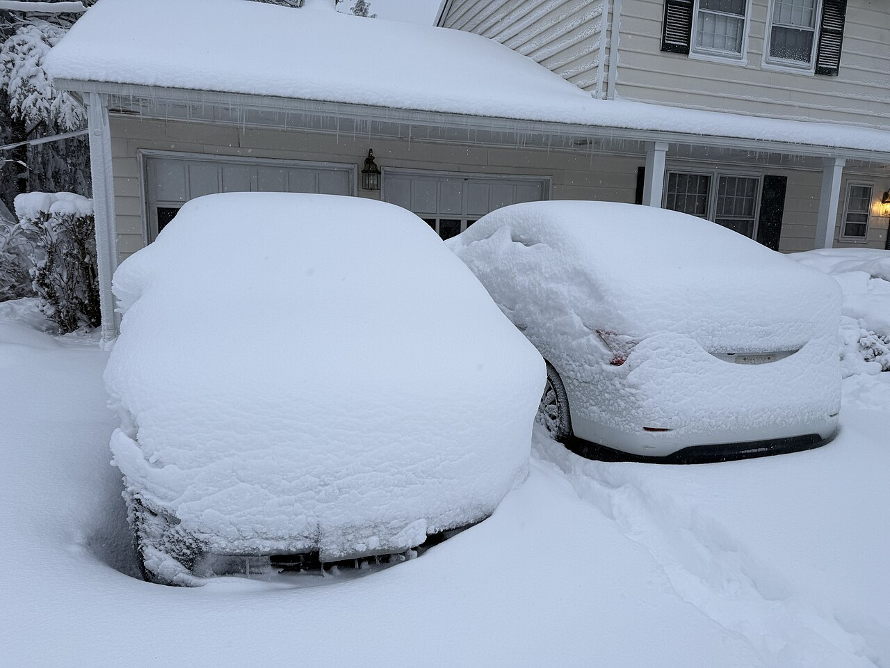

You're Warming Up Your Car Wrong (and It's Costing You)
That long idle on a cold morning isn't helping your car. It's burning gas and wearing your engine for nothing.

Photo: Famartin, CC BY-SA 4.0, via Wikimedia Commons

Every cold morning, the same scene plays out on driveways across Canada: cars sitting there idling for ten or fifteen minutes while their owners finish their coffee inside. It feels like the responsible thing to do. It feels like you're being kind to your engine. You're not. On a modern car, a long warm-up idle is one of the most common winter mistakes there is — and it costs you gas, engine life, and time, all for nothing.
Why it's wrong
The warm-up idle comes from the era of carbureted engines, which genuinely needed a few minutes before they'd run properly. Your car doesn't have a carburetor. Modern fuel-injected engines are ready to drive about 30 seconds after starting, even in deep cold. Idling doesn't warm the engine efficiently either: an engine at idle makes very little heat, so it takes far longer to reach operating temperature sitting still than it does driving gently. Worse, a cold idling engine runs rich — it dumps extra fuel into the cylinders, and some of that fuel washes past the piston rings into the oil, thinning it. Over a whole winter of long idles, that adds up to real wear. And while the engine idles, your transmission, wheel bearings, and steering fluid are still stone cold — idling warms none of them.
The right way
- Start the car and wait about 30 seconds. That's enough for oil pressure to build and reach every part of the engine. In extreme cold (below -20°C), give it a minute — not ten.
- Drive gently right away. Keep the revs low and the throttle light for the first few minutes. The engine warms up faster under light load than it ever will idling, and so does everything else.
- Don't floor it until the temperature gauge moves. Hard acceleration on a cold engine is the one thing that genuinely hurts it. Easy does it until the needle is off the bottom.
- Use your block heater instead. If your car has one, plugging in for a couple of hours before you leave does more for cold starts than any amount of idling — warm oil, easier cranking, heat sooner.
- Clear the car while it runs those 30 seconds. Scrape the windshield, brush the snow off, and by the time you're done, the car is ready to go.
The rundown
Thirty seconds of idle, then drive gently. That's the whole warm-up. The ten-minute idle is a leftover from a different era of engines — it burns fuel, dilutes your oil, and doesn't even warm the car properly. Your engine warms up by working, not by sitting.
← Back to the full winter checklist
Watch: Should You Warm Up Your Car's Engine Before Driving? Myth Busted
🌡️ Check tomorrow morning FREE TOOL
Cold mornings are when weak batteries give up. Will My Car Start Tomorrow? checks the overnight low and tells you your risk before you are standing in the driveway.